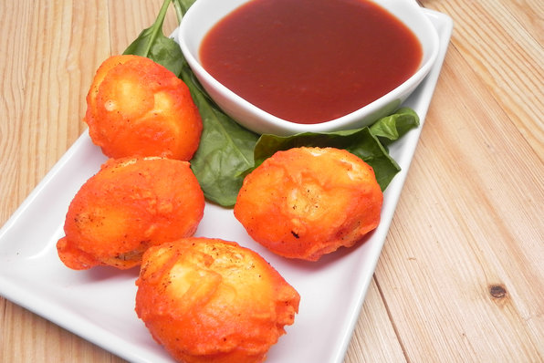

Place eggs in a saucepan and cover with water. Bring to a boil, remove from heat, and let eggs stand in hot water for 15 minutes. Remove eggs from hot water, cool under cold running water, and peel.
Combine rice vinegar, ketchup, brown sugar, and soy sauce in a saucepan. Heat over medium heat while stirring until sugar has dissolved, about 5 minutes. Stir sauce and let cool.
Prepare the batter by adding a few drops of red and yellow food coloring to the water to get a deep orange color. Combine flour with salt and pepper in a bowl; pour in orange water and stir until there are no lumps.
Heat oil in a wok to 375 degrees F (190 degrees C).
ently roll eggs in cornstarch to coat and shake off excess cornstarch. Dip into orange batter so they are fully covered. Poke eggs with the bamboo skewer and drop into the hot oil. Deep fry until the batter is crispy, about 2 minutes per side. Remove eggs with a slotted spoon and drain on paper towels.